Recursos Naturales
| Recursos Naturales | Imagen |
|---|---|
| Recursos mineros: oro, plata, cobre, zinc y otros metales | 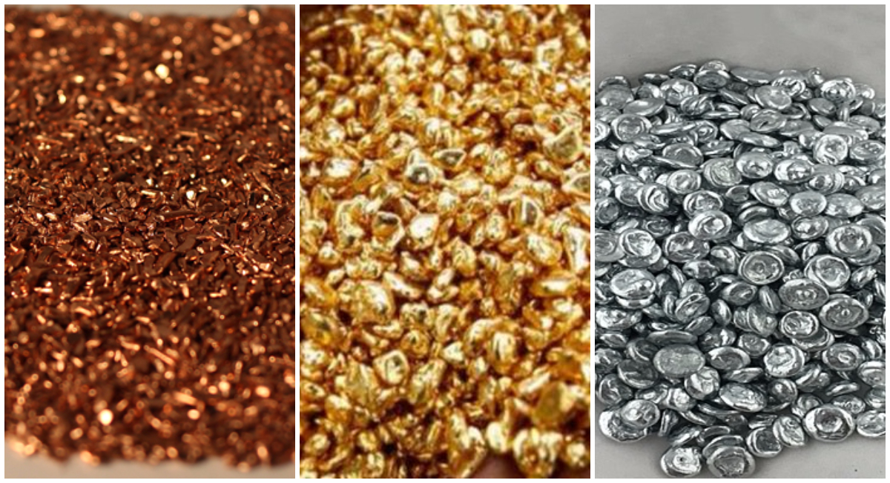 |
| Recursos agrícolas: café, cacao, plátanos, arroz, maíz, entre otros | 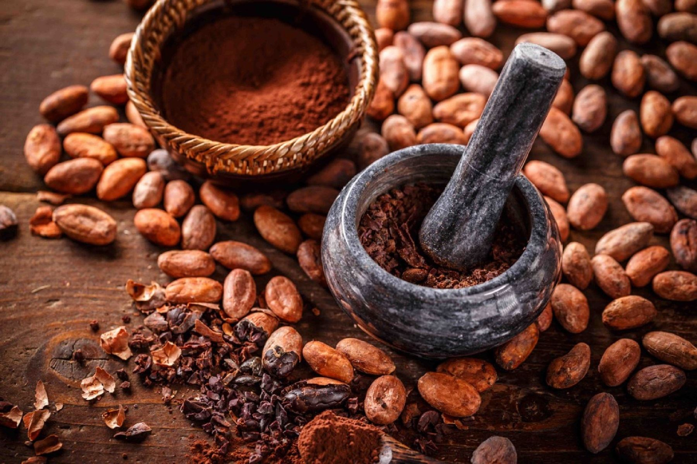 |
| Recursos hídricos: ríos, arroyos, cascadas |  |
El departamento de San Martín ocupa un 3,9% del total del Perú con una superficie de 51 253,31 km² y está ubicado en la parte norte del país. Este departamento limita al norte con el departamento de Amazonas, al sur con el departamento de Huánuco, al este con el departamento de Loreto y al oeste con el departamento de La Libertad.
El departamento de San Martín cuenta con 10 provincias, las cuales son Moyobamba, Rioja, Lamas, El Dorado, San Martín, Picota, Bellavista, Huallaga, Mariscal Cáceres y Tocache.
| Recursos Naturales | Imagen |
|---|---|
| Recursos mineros: oro, plata, cobre, zinc y otros metales | 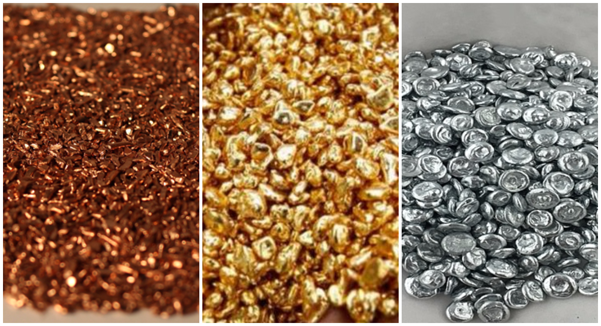 |
| Recursos agrícolas: café, cacao, plátanos, arroz, maíz, entre otros | 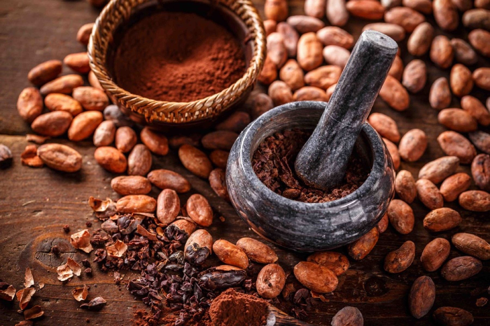 |
| Recursos hídricos: ríos, arroyos, cascadas | |
En el departamento de San Martín, prevalece un clima tropical y subtropical en donde su temperatura llega a variar entre los 23°C y 27°C y su precipitación anual es de 1500 mm. Se distinguen dos estaciones: una seca, que abarca entre los meses de junio a septiembre, y otra de precipitaciones, que abarca los meses de octubre a mayo. Además, el departamento cuenta con lagunas y ríos caracterizados por sus altas temperaturas.
| Especies | Imagen |
|---|---|
| Casha Pona | 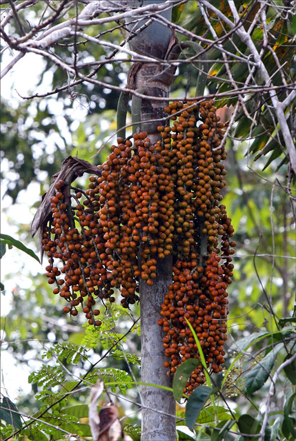 |
| Cattleya rex | 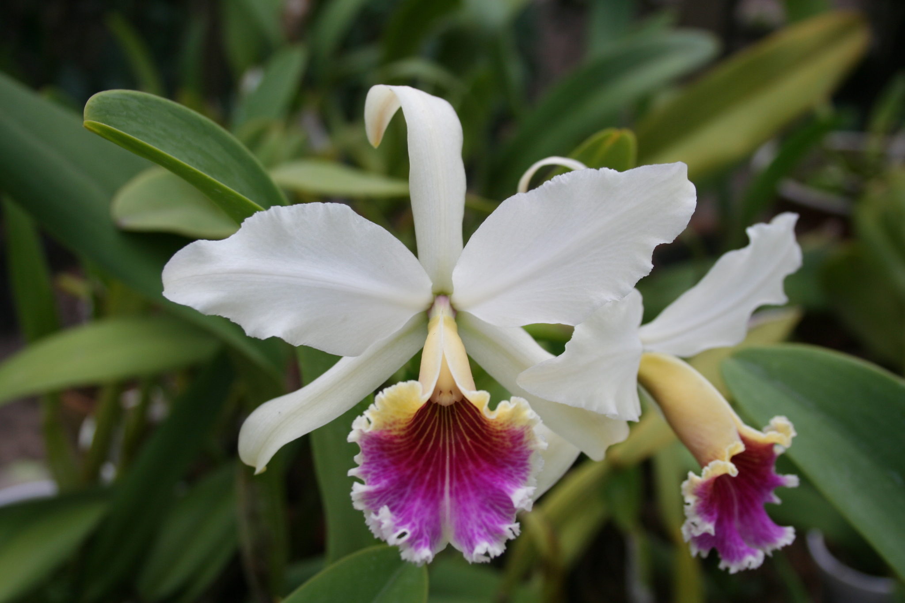 |
| La Huacrapona | 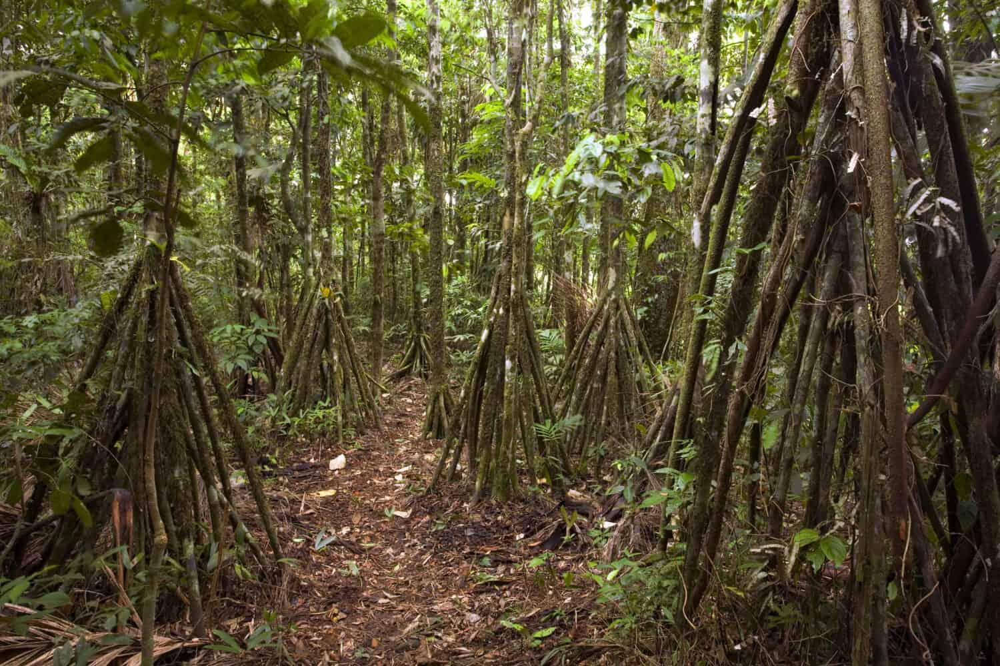 |
| Bombonaje | 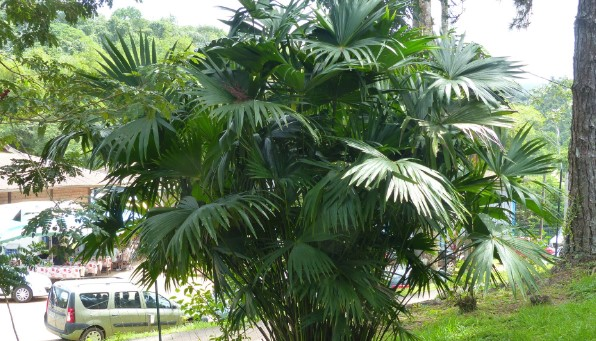 |
| Especies | Imagen |
|---|---|
| Vizcachas | 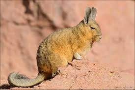 |
| Mono Choro | 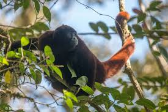 |
| Lechuzita bigotona | 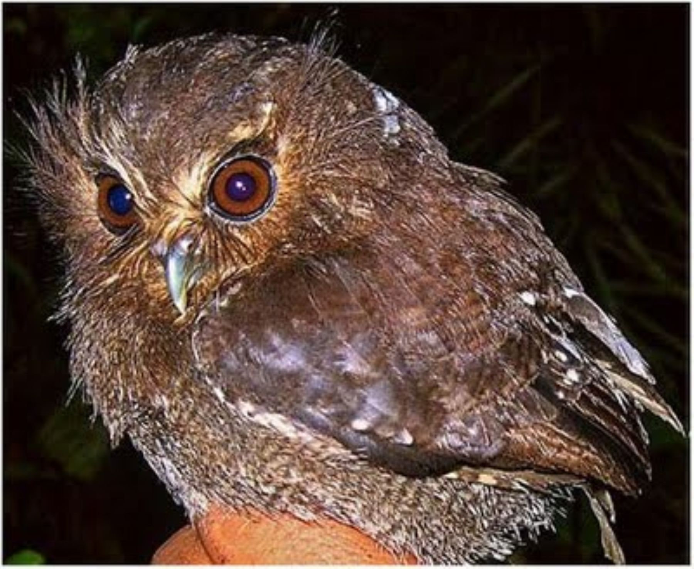 |
| Mono Tocón | 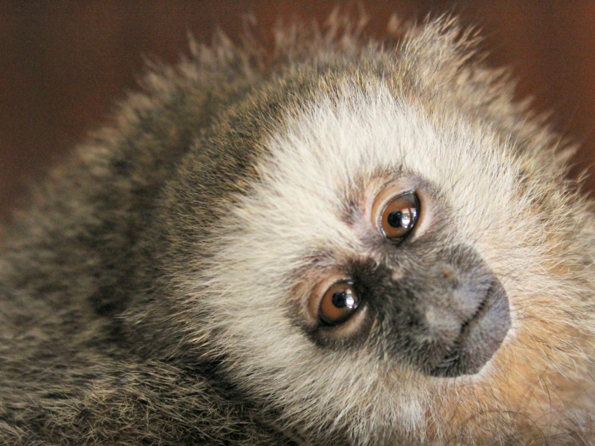 |
La relación entre el hombre y su medio se puede ver, por ejemplo, en la manera en que viven su día a día. Las comunidades llegan a habitar en tierras bajas dependiendo del río y provisión del agua. Por otro lado, las personas que habitan en tierras altas deben adecuar sus